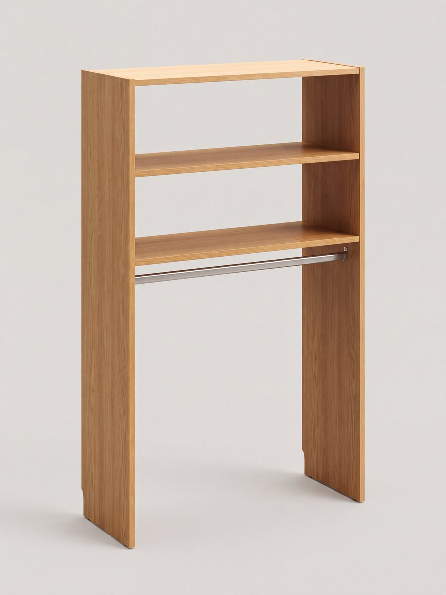

Hanging with shelves over it
A rod below for what hangs, two adjustable shelves above for what folds.
What this section needs
| Rod height | 66" from the floor |
|---|---|
| Shelves above | 2, adjustable on 32mm pin centres |
| Shelf block height | 18" as drawn, movable |
| Shelf depth | 14" standard, 16" if it takes bins |
| Depth of the hanging | 24" |
| Section width | 24" to 36" |
Every one of these feeds the price. Change a number in the 3D builder and the parts list and the total change with it.

Two jobs in one section
A rod below and shelves above is the section that makes a small closet work. The hanging takes shirts or dresses, the shelves above take the folded things that would otherwise need a dresser in the bedroom.
As drawn it is a long hanging rod with an 18 inch block of two shelves over it. Both are movable. If you fold more than you hang, pull the rod down and give the shelves the height.
Getting the shelf depth right
Folded knits want 14 inches. A folded sweater is about 12 inches square, so a 14 inch shelf holds it with the fold facing out and nothing hanging over the edge.
Bins and linen want 16 inches. Handbags want 16 inches and more height between shelves than you think.
Deeper is not better. Anything past 16 inches at that height means reaching over the front row to find the back row, and the back row stops being used.
How we build it
The shelves sit on pins at 32mm centres, which is the European cabinet standard and the reason they can be moved later without drilling.
Every exposed edge is banded, including the back edge where a shelf meets an open side, because that is the edge hands touch when they reach in.
Clear span is capped at 36 inches. Past that a three quarter inch shelf deflects visibly under a real load of folded clothes, and the deflection is permanent.
Questions about this layout
If yours is not here, the answer is a phone call away. Ask us directly.
How deep should the shelves be?
Fourteen inches for folded knits, sixteen for bins, linen and handbags. Deeper than sixteen and the back row stops being used.
Can I change the balance later?
Yes. The shelves are on 32mm pins, so you can move them. The rod position is fixed at the install.
How many shelves fit above the rod?
Two as drawn, in an 18 inch block. You can take it to three if you drop the rod, and the builder prices it as you change it.
Does a shelf that wide sag?
Not within 36 inches of clear span, which is what we build to. Past that a partition goes in instead of a longer shelf.
Are the shelf edges finished?
Every exposed edge is banded, including the back edge where a shelf meets an open side.
Draw it, and see the price.
The builder opens with this layout already in a section. Change the width, the finish and the hardware and the total moves with it.